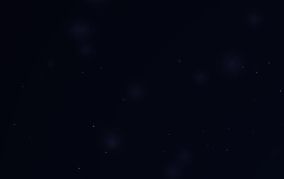
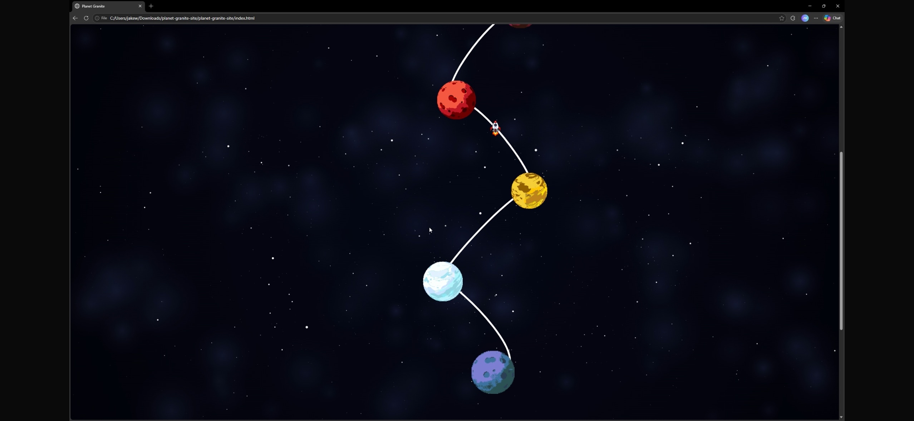

Game: Testing & Feedback
Across the project, we have been testing our game alongside development to ensure that everything works well. During our showcase in class, we recieved feedback from our peers and instructors, which we will use to further improve our game. We are currently working on implementing the feedback we received, and we are excited to see how it will enhance the gameplay experience for our players.
During the feedback session we received valuable feedback: we need to integrate Granite more deeply into the gameplay, affecting player's decision-making process, not just as a coding assistant on planets. We came up with several options for the start of the game - for example, requiring a password from Granite to start the spaceship, or asking the player to type “Start the engine”. Other option was to use the Granite to help the player plan the next path between planets.
Blog: Testing & Feedback
Using some of Ildi's previous work, we implemented a starry background to add to our space theme to make the blog feel more immsersive. However, during testing, we recieved feedback that the background was too busy and the big stars made it very distracting and not realistic. This was changed to reflect on the feedback we had received, and we created a more subtle background with smaller stars that added to the atmosphere without overwhelming the content.

We created a rocket animation with the intention of making our blog more visually appealing and engaging for our readers. However, during testing, the rocket didn’t start or end in the correct position and rotated incorrectly – breaking the immersion of the experience and made the navigation feel broke and inconsistent. We received feedback that the rocket should rotate alongside the path, so this is what we done.

To resolve this issue, the JavaScript controlling the animation was completely reworked, alongside refining the SVG path itself to allow a smooth aesthetic when scrolling. We experimented with different methods of calculating the rocket’s position using path length and scroll percentages, eventually improving the accuracy of the movement so the rocket aligned more naturally with the curve.